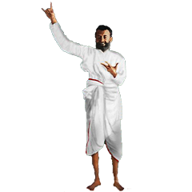

Kalpaturu
Ramakrishna



Sri Sri Ramakrishna Sevasangha is a non-political, non-sectarian spiritual organizations which have been engaged in various forms of humanitarian, social service activities for more than a decade. Inspired by the ideals of renunciation and service, the monks and lay devotees of the Ashram serve thousands of men, women and children, without any distinction of caste, religion or race, because they see the living God in them.
শ্রী শ্রী রামকৃষ্ণ সেবা সংঘ একটি অরাজনৈতিক, অসাম্প্রদায়িক আধ্যাত্মিক সংগঠন যা এক দশকেরও বেশি সময় ধরে বিভিন্ন ধরণের মানবিক, সমাজসেবা কার্যক্রমে জড়িত। ত্যাগ ও সেবার আদর্শ দ্বারা অনুপ্রাণিত হয়ে, আশ্রমের সন্ন্যাসী এবং শুদ্ধাভক্তরা বর্ণ, ধর্ম বা বর্ণের কোনও পার্থক্য ছাড়াই হাজার হাজার পুরুষ, মহিলা এবং শিশুদের সেবা করেন, কারণ তারা তাদের মধ্যে জীবন্ত ঈশ্বরকে দেখেন।
The ideology of Sri Sri Ramkrishna Sevasangha consists of the eternal principles of Vedanta as lived and experienced by Sri Ramakrishna and expounded by Swami Vivekananda. This ideology has three characteristics: it is modern in the sense that the ancient principles of Vedanta have been expressed in the modern idiom; it is universal, that is, it is meant for the whole humanity; it is practical in the sense that its principles can be applied in day-to-day life to solve the problems of life.
শ্রী শ্রী রামকৃষ্ণ সেবা সংঘের আদর্শে শ্রী রামকৃষ্ণের দ্বারা বেঁচে থাকা ও অভিজ্ঞ হিসাবে বেদাতার চিরন্তন নীতিগুলি রয়েছে এবং স্বামী বিবেকানন্দ ব্যাখ্যা করেছেন এই মতাদর্শের তিনটি বৈশিষ্ট্য রয়েছে: এটি আধুনিক অর্থে যে বেদনাতির প্রাচীন নীতিগুলি আধুনিক রূপকথায় প্রকাশিত হয়েছে; এটি সর্বজনীন, এটি সমগ্র মানবতার জন্য বোঝানো হয়েছে; এটি এই অর্থে ব্যবহারিক যে এর নীতিগুলি জীবনের সমস্যাগুলি সমাধান করার জন্য প্রতিদিনের জীবনে প্রয়োগ করা যেতে পারে।
The emblem of the Ramakrishna Order designed by Swamiji is a unique and unparalleled work of art created by one of the richest minds in contemporary history in an exalted mood of spiritual inspiration. It is a profound symbol of harmony and synthesis for reverential meditation in this present age of conflict and disharmony. This symbol is the epitome of Swamiji’s message of harmony and synthesis, leading to life’s fulfilment. This is indeed the most eloquent expression of what he really preached, what he wanted every man and woman to be, to realize, either in the East or in the West.
স্বামীজী রচিত রামকৃষ্ণ আদেশের প্রতীক আধ্যাত্মিক অনুপ্রেরণার এক উচ্চমানের মেজাজে সমসাময়িক ইতিহাসের এক ধনী মনের দ্বারা নির্মিত শিল্পের একটি অনন্য এবং অতুলনীয় রচনা। এটি এই সংঘাত এবং বিচ্ছিন্নতার বর্তমান যুগে শ্রদ্ধাশীল ধ্যানের জন্য সম্প্রীতি এবং সংশ্লেষণের গভীর প্রতীক। এই প্রতীকটি স্বামীজীর সম্প্রীতি এবং সংশ্লেষণের বার্তা, যা জীবনের পরিপূর্ণতার দিকে নিয়ে যায়। তিনি প্রকৃতপক্ষে যা প্রচার করেছিলেন, তার পূর্ব বা পশ্চিমে প্রতিটি পুরুষ ও স্ত্রীকেই কী উপলব্ধি করা উচিত, এটিই তার প্রকৃতপক্ষে সুস্পষ্ট প্রকাশ।
Organised health camp in
rural areas under the
guidence of Vivek Nagar
Ramakrishna
Mission
Blanket, Mosquito net and
some other clothes given
to poor man and
women by the
Ashram
Arranged Seminer nearby
school by the Maharaja
of Ramakrishna Mission
Vivek Nagar
It covers the areas
of education,
health and
income generation for
Inter-religious dialogue and
harmony are
talked about and discussed
very frequently these
days
আশ্রম সংক্রান্ত খবর এবং ভক্তদের সাথে নিয়মিত যোগাযোগ রাখার জন্য হোয়াটসঅ্যাপ গ্রুপে যুক্ত হোন
আশ্রম, দীক্ষা, অনুদান এবং অন্যান্য যেকোনো প্রকার জানার থাকলে আমাদের সঙ্গে যোগাযোগ করুন
সক্রিয় কার্যকরী সমিতি ও কমিটির উপদেষ্টা এবং আশ্রমের অন্যান্য সদস্যদের সাথে পরিচিত হোন
God can be realized through all paths. All religions are true. The important thing is to reach the roof. You can reach it by stone stairs or by wooden stairs or by bamboo steps or by a rope. You can also climb up by a bamboo pole.
- Sri RamakrishnaA Man is not poor without a Rupee but a man is really poor without a Dream and Ambition...
- Swami Vivekanandaশ্রীরামকৃষ্ণ অনুরাগী, দানশীল ব্যক্তি, দীক্ষিত ভক্তদের আর্থিক অনুদানে আশ্রমের সেবা কার্য পরিচালিত হয়
সহৃদয় ব্যক্তির অনুদান আমরা সাদরে গ্রহণ করি
সহৃদয় ব্যক্তির অনুদান আমরা সাদরে গ্রহণ করি